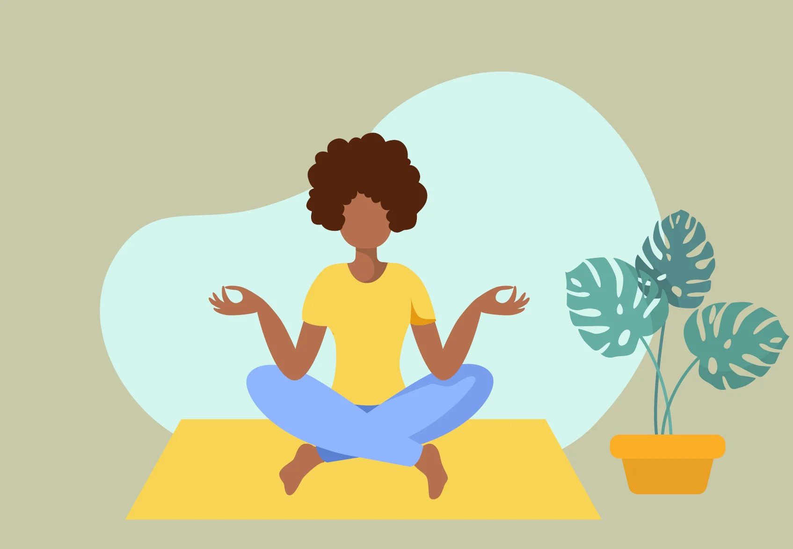
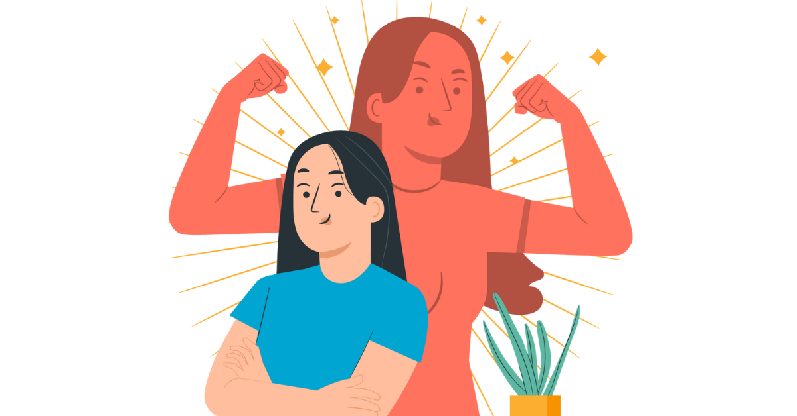

Happy!
There are plenty of ways to be so!

Joyful!
It is even better when shared!

Ecstatic!
A smile to make your day bright!
HAPPINESS
What is happiness to be exact?
The term happiness is interchangeable with “subjective well-being,”
which is typically measured by asking people about how satisfied they feel with their lives (evaluative),
how much positive and negative emotion they tend to feel (affective), and their sense of meaning and purpose (eudaimonic).
In her 2007 book, "The How of Happiness", positive psychology researcher Sonja Lyubomirsky elaborates, describing happiness
as “the experience of joy, contentment, or positive well-being, combined with a sense that one’s life is good, meaningful, and worthwhile.”
Some FACTS about happiness!
- Happiness is linked to lower heart rate and blood pressure, as well as healthier heart rate variability.
- Happiness can also act as a barrier between you and germs – happier people are less likely to get sick.
- People who are happier enjoy greater protection against stress and release less of the stress hormone cortisol.
- Happy people tend to experience fewer aches and pains, including dizziness, muscle strain, and heartburn.
- Happiness acts as a protective factor against disease and disability (in general, of course).
- Those who are happiest tend to live significantly longer than those who are not.
- Happiness boosts our immune system, which can help us fight and fend off the common cold.
- Happy people tend to make others happier as well, and vice versa – those who do good, feel good!
- A portion of our happiness is determined by our genetics (but there’s still plenty of room for attitude adjustments and happiness-boosting exercises!).
- Smelling floral scents like roses can make us happier.
- Those who are paid by the hour may be happier than those on salary (however, these findings are limited, so take them with a grain of salt!).
- Relationships are much more conducive to a happy life than money.
- Happier people tend to wear bright colors; it’s not certain which way the relationship works, but it can’t hurt to throw on some brighter hues once in a while—just in case!
- Happiness can help people cope with arthritis and chronic pain better.
- Being outdoors – especially near the water – can make us happier.
- The holidays can be a stressful time, even for the happiest among us – an estimated 44% of women and 31% of men get the “holiday blues.”
- Happiness is contagious! When we spend time around happy people, we’re likely to get a boost of happiness as well.
Want to know more about happiness? Click on the EXPLORE button in the navigation bar!
HOW TO
Here we will talk about how to be happier!
Just some suggestions on how to be happier, be sure to share it with your friends and families!
1. Manage your stress levels

If you have a lot of stress in your life, find ways to reduce it, such as learning a few time-management techniques.
Introduce regular exercise and time to yourself. These are positive changes. Taking control of your time in this way can effectively reduce stress.
Click on the image to find out how to do it!
2. Enjoy yourself

Doing things that you enjoy is good for your emotional wellbeing.
Simple activities like watching sports with a friend, having a soak in the bath, or meeting up with friends for coffee can all improve your day.
Doing something you're good at, such as cooking or dancing, is a good way to enjoy yourself and have a sense of achievement.
Click on the image to find out how to do it!
3. Boost your self-esteem

Self-esteem is the way you feel about yourself.
The best way to improve your self-esteem is to treat yourself as you'd treat a valued friend, in a positive but honest way.
Click on the image to find out how to do it!
4. Have a healthy lifestyle
A few clues on how to explore this are: Choose a well-balanced diet, Do some exercise, and Get enough sleep.
Click on the image to find out how to do it!
5. Talk and share
Communication is important, whether it's with a friend, family member or counsellor.
Talking things through helps you to release tension, rather than keeping it inside. It helps strengthen your relationships and connect with people.
CONTACT
Have feedbacks on how to improve this page? Email here!
Hanoi, Vietnam
Phone: 079 6139717
Email: luongdtran06@mail.com